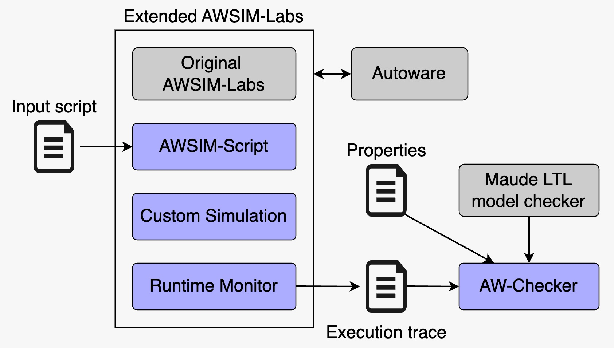

A Runtime Verification Framework for ADSs
Ensuring the safety of autonomous driving systems (ADSs) through rigorous verification in simulated environments is crucial before real-world deployment. However, using simulation environments for ADS testing and verification poses several challenges, including specifying various behaviors of traffic participants and collecting comprehensive real-time data to verify the ADS.
To address these challenges, we propose a framework (Tran et al., 2025) for runtime verification of ADSs. This framework integrates AWSIM-Script, a scripting language for defining traffic scenarios; Runtime Monitor, a tool to record and log real-time data during the simulation for offline verification; and AW-Checker, a Linear Temporal Logic-based property checker for verifying safety requirements.

AWSIM-Script is a script language for describing traffic scenarios to be executed. We implement it as a sub-module within the simulator. It provides users with the flexibility to configure different aspects of the simulation, such as traffic participants and their planning trajectories. The script also allows users to define key parameters for the ego vehicle, including its initial pose, goal pose, and maximum velocity, simplifying scenario creation in a single script.
To mitigate the limitations of the original AWSIM-Labs, we extended it by developing the Custom Simulation module. This module supports advanced NPC behaviors, such as, setting goal positions, adjusting velocities, and defining lane changes for NPCs, all of which are not possible with the original AWSIM-Labs. These enhancements make it possible to simulate more complex and realistic traffic behaviors in the simulation environment.
Once a simulation is executed, the Runtime Monitor records the real-time data from the simulation environment and outputs this information into a trace file once the simulation finishes. The monitor captures comprehensive data, including both the ground truth trajectories of the ego and NPCs in the simulated environment and the internal decisions of the ADS (e.g., planning trajectory for the ego vehicle), enabling component-level verification for each module of the ADS. The exported trace file allows for offline analysis and verification of desired properties without the need to rerun the simulation, saving time and resources. The trace data can be output in multiple formats, either as a Maude state machine for directly performing safety verification with AW-Checker or in a widely used format like YAML for other analysis approaches.
The AW-Checker takes an execution trace and the properties of interest as the inputs. The properties are in the form of LTL formulas, which are constructed from a set of predefined atomic propositions, representing conditions to be checked against the trace. We use Maude as the specification and programming language to define the syntax and semantics of these atomic propositions, respectively. Using the Maude LTL model checker, AW-Checker verifies whether the trace satisfies the given properties. Leveraging the Maude LTL model checker offers two key benefits: it provides high performance and helps avoid potential bugs that could arise from self-implemented search/checking algorithms.
Techical details of the framework are presented in our paper (Tran et al., 2025), and the framework’s source code is available at https://github.com/duongtd23/AW-Runtime-Verification.